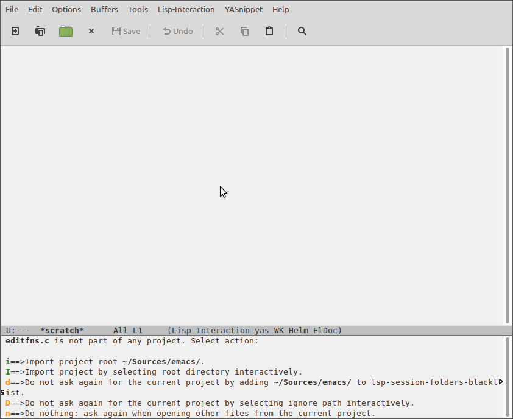
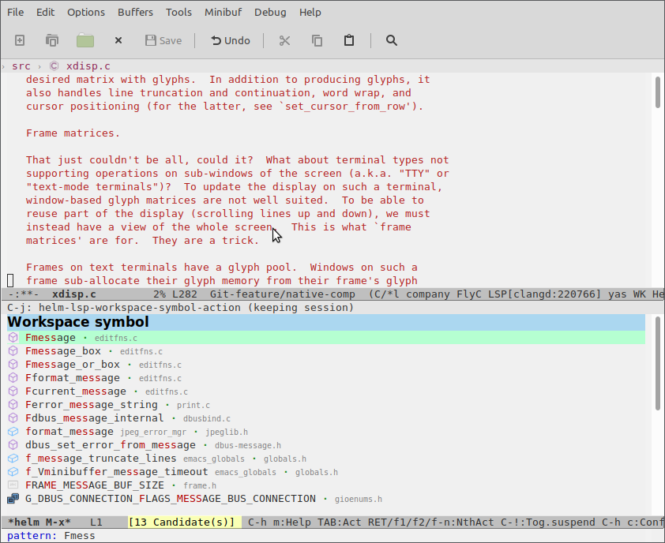
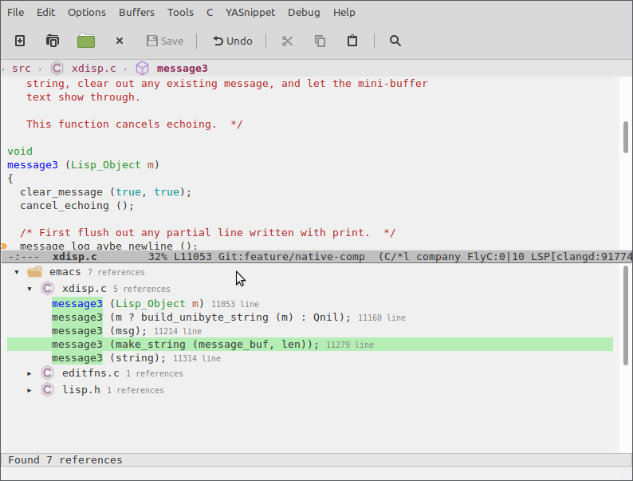
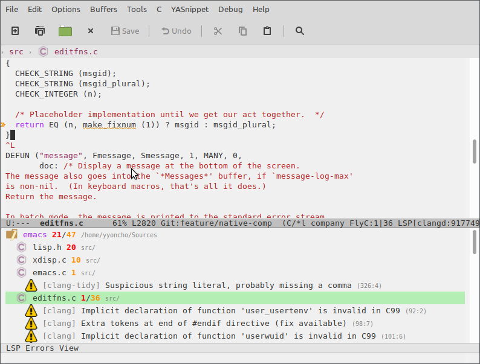
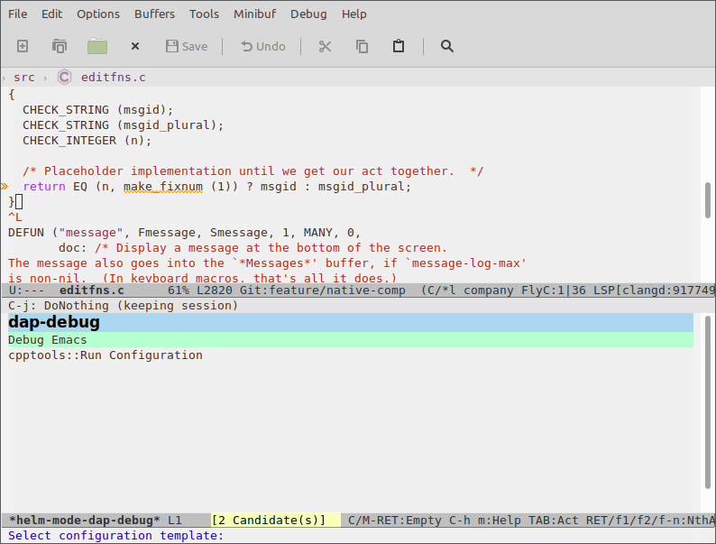

Configuring Emacs a C/C++ IDE#
In this guide, I will show you how to configure lsp-mode and dap-mode for C/C++ development, using GNU Emacs as an example code base. At the end of this tutorial, Emacs should provide you with all the language-aware editor features you'd expect from a modern C++ IDE, such as
- Code completion...
environment. The guide is mainly focused on
lsp-mode/dap-modeand the features that they have. We will useGNU Emacsas a project in order to illustrate each of the steps to getC/C++project up and running.
Some of the main features that we can expect from a C++ IDE:
- Code completion
- Real-time syntax checking
- Code navigation (references/definitions/implementations/symbol search)
- Visual IDE debugger
- Document outline, breadcrumb and modeline widgets
For all lsp-mode features, check here.
Obtaining a language server#
lsp-mode is a client-server application with Emacs acting as the client. In
order for it to work, you have to install a separate language server that
understands the specifics of your target language. As of late 2020, there are 2
production-ready language servers for C/C++ and Objective-C,
ccls and
clangd, with ccls's precursor
cquery being deprecated. used by Emacs as provider for language specific
features (completion, diagnostics, navigation, etc). For some of the language
servers lsp-mode ships with automatic installation scripts but there is no
such script for installing C/C++ language server due to their overall
complexity. For this guide we will be using
clangd but most of the steps here apply to ccls as well. lsp-mode is
pre-configured and it will be able to find the language server automatically
when it is installed on the host machine and it is present on the path. In case
clangd is not present on the path clangd can be installed following their
Getting Started
instructions.
Note: for Debian based system use https://apt.llvm.org/
Project setup#
To understand your source code, clangd needs to know the compiler flags that are used to build the project. (This is
just a fact of life in C++, source files are not self-contained).
By default, clangd will assume your code is built as clang some_file.cc, and
you’ll probably get spurious errors about missing #included files, etc. There
are a couple of ways to fix this. You may read about them in installation or in https://sarcasm.github.io/notes/dev/compilation-database.html.
In order to generate compile_commands.json for Emacs itself I have found
that Bear works fine.
sudo apt-get install bear
Setup Emacs sources and dependencies:
sudo apt-get install -y build-essential git autoconf texinfo libgnutls28-dev libxml2-dev libncurses5-dev libjansson-dev
git clone git://git.sv.gnu.org/emacs.git
cd emacs
./autogen.sh
CFLAGS="-ggdb3 -O0" CXXFLAGS="-ggdb3 -O0" LDFLAGS="-ggdb3" ./configure --with-modules --with-json
bear make -j$(nproc)
Prefixing make -j$(nproc) with bear will generate the
compile_commands.json which later will be used by clangd. CFLAGS="-ggdb3
-O0" CXXFLAGS="-ggdb3 -O0" LDFLAGS="-ggdb3" will compile Emacs with debug
symbols.
lsp-mode configuration#
Here is a bare-bones lsp-mode/dap-mode configuration template to get you started with your own lsp-mode config, or to try out in a separate one-off session. Please note that Emacs configuration frameworks such as Spacemacs or Doom Emacs often ship with lsp-mode settings of their own; should you be using such a framework, and find that lsp-mode doesn't behave as intended, please make sure to follow this tutorial from a clean starting point.
in your config or you could run in separate session.
(require 'package)
(add-to-list 'package-archives '("melpa" . "http://melpa.org/packages/") t)
(package-initialize)
(setq package-selected-packages '(lsp-mode yasnippet lsp-treemacs helm-lsp
projectile hydra flycheck company avy which-key helm-xref dap-mode))
(when (cl-find-if-not #'package-installed-p package-selected-packages)
(package-refresh-contents)
(mapc #'package-install package-selected-packages))
;; sample `helm' configuration use https://github.com/emacs-helm/helm/ for details
(helm-mode)
(require 'helm-xref)
(define-key global-map [remap find-file] #'helm-find-files)
(define-key global-map [remap execute-extended-command] #'helm-M-x)
(define-key global-map [remap switch-to-buffer] #'helm-mini)
(which-key-mode)
(add-hook 'c-mode-hook 'lsp)
(add-hook 'cpp-mode-hook 'lsp)
(setq gc-cons-threshold (* 100 1024 1024)
read-process-output-max (* 1024 1024)
treemacs-space-between-root-nodes nil
company-idle-delay 0.0
company-minimum-prefix-length 1
lsp-idle-delay 0.1 ;; clangd is fast
;; be more ide-ish
lsp-headerline-breadcrumb-enable t)
(with-eval-after-load 'lsp-mode
(add-hook 'lsp-mode-hook #'lsp-enable-which-key-integration)
(require 'dap-cpptools)
(yas-global-mode))
Feature overview#
And now it is time to start hacking on Emacs core!
emacs ~/Sources/emacs/src/editfns.c
Now, if everything was successful you will be asked to select a project root.

Note: the project root is needed by the language server in order to know where to
start the project discovery from. Typically, this is the git repository root but since exceptions to this rule have caused us a lot of trouble in the past (monorepos come to mind), lsp-mode by default asks the user to manually confirm the project root the first time a project is opened.
mono-repos it might be not. lsp-mode by default will ask the user to confirm
the project root (automatic root selection has caused a lot of trouble for us in
the past).
Completion#
By default, lsp-mode uses company-mode as its completion frontend. When
present, company-mode will be auto-configured and it will just work.

keybindings/which-key integration#
lsp-mode has smart (almost) complete mnemonic keybindings which auto-enable
itself when a certain feature is supported by the server and when the
corresponding Emacs package is installed. In addition to that, lsp-mode
ships with which-key integration for better discoverability.
By default, lsp-mode's keybindings are available under s-l (Super-l), e. g. s-l h h will
show documentation at point. You may change the default prefix by setting
lsp-keymap-prefix.

Mouse support#
Yeah, lsp-mode supports mouse!

Refactoring/Code actions#
lsp-rename(s-l r r) - rename symbol/function at point.lsp-execute-code-action(s-l a a) -clangdis able to auto-correct some of the errors.
Navigation#
lsp-mode has integration with xref core package and in addition it has
xref-find-definitions(M-.ands-l g g) - find definition(s) at pointxref-find-references(s-l g r) - find references to the symbol at point
helm-imenu- browse the symbols in current documenthelm-lsp-workspace-symbol- find symbol in current project helm-lsp-global-workspaces-symbol- find symbol in all projectslsp-treemacs-type-hierarchy- show type hierarchy
Note: if you prefer ivy over helm you may check out lsp-ivy.
lsp-treemacs#
lsp-treemacs is a package providing integration with
treemacs and an alternative
tree-view visualization. Refer to the project's readme for further information.

Help/Documentation#
lsp-mode automatically enables eldoc-mode which will show hover information
in the minibuffer. lsp-mode is showing only the one line signature info so if
you want to see the full documentation at point you can use lsp-describe-thing-at-point.

In addition to that you can also see signature help after pressing C-M-SPC or
after pressing trigger char like (. If there is more than one applicable signature due to function overloading, you may browse between the available candidates using M-n/M-p.
may browse them via M-n/M-p

Diagnostics#
For on-the-fly errors lsp-mode is using flycheck (flymake is also
supported). It is configured automatically. In addition to standard flycheck
features lsp-mode provides a project-wide error list via
lsp-treemacs-errors-list.

Debugging#
Just like lsp-mode provides editing features through the editor-independent Language Server Protocol, its sister package dap-mode provides debugging features through the editor-independent Debug Adapter Protocol and language-specific debugging servers called debug adapters.
front-end of the sister Debug Adapter Protocol. It is again client server
like Language Sever Protocol. dap-mode provides all of the traditional
debugger features - breakpoints(conditions, hit count, etc), threads, locals,
Installation#
dap-mode provides installation commands for most of the debug adapters. In this
tutorial we will use the vscode-cpptools debug adapter. To install the adapter
do M-x dap-cpptools-setup.
Note: you should have gdb on path.
Creating debug configuration#
dap-mode introduces the notion of debug configuration and debug template. The
debug configuration is the settings that are needed by the debug adapter to
start the program to debug. Debug template is a template for such configuration
which will be populated by the user or by dap-mode. There are two ways to
manage debug configuration - using emacs lisp via dap-debug-edit-template
and dap-register-debug-template. The second way is using launch.json. Put it
in project root and dap-mode will pick it up.
{
"version": "0.2.0",
"configurations": [
{
"name": "Debug Emacs",
"type": "cppdbg",
"request": "launch",
"program": "${workspaceFolder}/src/emacs",
"args": ["-q"],
"stopAtEntry": false,
"cwd": "${workspaceFolder}",
"environment": [],
"externalConsole": false,
"MIMode": "gdb"
}
]
}
At this point, dap-mode does not provide the list of all available properties
for each configuration. The full list can be found in package.json in
/.emacs.d/.extension/vscode/cpptools/extension/package.json when dap-mode is
using VScode package or debug adapter docs when not.
Debugging#
Start debugging via M-x dap-debug and select Debug Emacs from the list.
.
After pressing RET a fresh instance of Emacs will pop up. Then do M-x
helm-lsp-workspace-symbol and type message3. Go to that function and place a
breakpoint. You could do that by clicking in the fringe or by doing M-x
dap-breakpoint-toggle. Switch to the debugged instance and do
M-: (message "Hello, I am debugging Emacs core!") RET
 .
.